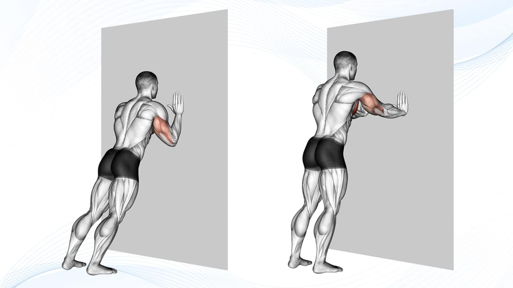
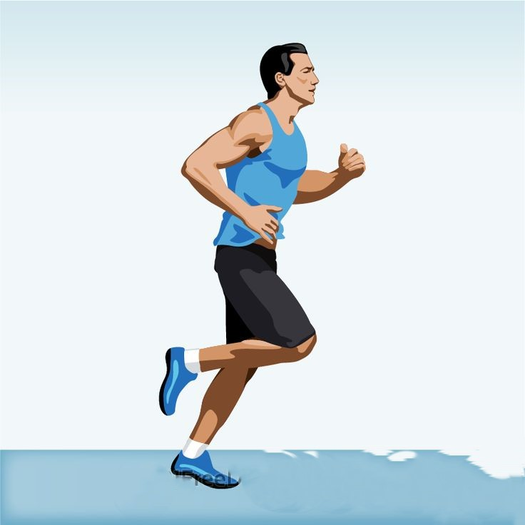
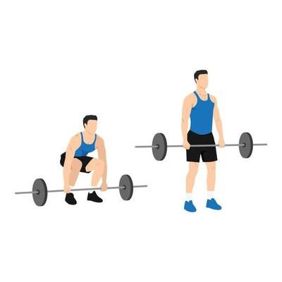

Walking
- Stand tall with good posture and engage core muscles.
- Take a step with right foot, then left, maintaining steady rhythm.
- Land midfoot and roll through from heel to toe with each step.
- Swing arms naturally to aid propulsion.
- Breathe deeply and keep muscles relaxed.
- Walk at a comfortable pace, gradually increasing duration and speed.
- After walk, perform gentle stretches to prevent stiffness and enhance flexibility.
- Walking offers various health benefits, including improved cardiovascular health, weight management, and stress reduction.

Seated Leg Raises
- Sit on chair with straight back, feet flat on floor.
- Place hands on chair sides for support.
- Lift one leg straight out in front, parallel to ground.
- Hold briefly, then lower leg with control.
- Repeat movement with other leg.
- Alternate legs for desired reps.
- Keep core muscles engaged for stability.
- Maintain steady breathing pattern.
- Increase reps gradually as comfort increases.
- Perform gentle stretches to prevent muscle stiffness after exercise.

Seated Arm Circles
- Sit on chair with straight back, feet flat on floor.
- Extend arms out to sides at shoulder height, palms down.
- Tighten core muscles for stability.
- Start making small circular motions with arms, moving forward.
- Gradually increase circle size as comfortable.
- Circle arms for desired reps or time.
- Reverse circles, moving arms backward.
- Maintain steady breathing pattern.
- Keep movements smooth and controlled.
- After exercise, perform gentle stretches to prevent muscle tightness.

Seated Marching
- Sit on chair with straight back, feet flat on floor.
- Tighten core muscles for stability and support.
- Lift one knee towards chest, bringing it as close as comfortable.
- Lower lifted leg back down to floor.
- Repeat movement with opposite leg.
- Alternate legs in marching motion for desired reps or time.
- Maintain steady breathing pattern.
- Keep movements controlled, avoid swinging legs.
- Focus on engaging abdominal muscles with each lift.
- After exercise, perform gentle stretches to prevent muscle tightness.

Seated Torso Twists
- Sit on chair with straight back, feet flat on floor.
- Place hands on hips or hold chair sides for stability.
- Tighten core muscles to stabilize spine.
- Inhale and sit tall, lengthening spine.
- Exhale and slowly rotate torso to one side, keeping hips forward.
- Hold twist briefly, feeling stretch in midsection.
- Inhale and return to starting position.
- Exhale and repeat twist to opposite side.
- Alternate twists for desired reps or time.
- Maintain steady breathing pattern.
- Keep movement controlled, avoid jerking.
- Rotate from waist, not just arms.
- After exercise, perform gentle stretches to release tension.
.jpg)
Seated Shoulder Press (with Water Bottles or Light Weights)
- Sit on sturdy chair with feet flat on ground, back straight.
- Hold water bottles or light weights at shoulder height, palms facing forward, elbows bent.
- Exhale and push weights upward until arms are fully extended overhead.
- Inhale and lower weights back down to shoulder height with control.
- Engage core muscles for stability throughout exercise.
- Maintain steady breathing, exhaling on lifting phase, inhaling on lowering phase.
- Keep back straight, avoid arching.
- Modify weight or range of motion to match fitness level, prevent strain.
- After exercise, perform gentle stretches to prevent muscle tightness.

Chair Squats
- Sit on edge of sturdy chair, feet hip-width apart, flat on floor.
- Engage core muscles, keep back straight.
- Extend arms straight out in front for balance, if needed.
- Slowly stand up from chair by pushing through heels, straightening legs.
- Keep chest lifted, gaze forward as you stand up.
- Once standing, pause at top position for stability.
- Lower back down to seated position by bending knees, pushing hips back.
- Aim to lower hips until lightly touch chair, but don't fully sit down.
- Keep weight in heels, maintain control during descent.
- Ensure knees stay aligned with toes, avoid collapsing inward.
- Exhale as you stand up, inhale as you lower back down.
- Modify squat depth and speed based on fitness level and comfort.
- After exercise, perform gentle stretches to prevent muscle tightness.

Wall Push-Ups
- Stand facing sturdy wall, arms length away.
- Place hands flat on wall slightly wider than shoulder-width apart, at shoulder height.
- Step feet back until body forms straight line from head to heels.
- Tighten core muscles to maintain stable plank position.
- Lower chest toward wall by bending elbows, keeping them close to body.
- Keep body straight, avoid sagging or arching back.
- Lower until chest nearly touches wall, then push back up by straightening arms.
- Exhale as you push away from wall, inhale as you lower toward it.
- Ensure elbows stay in line with shoulders and wrists.
- Modify distance between feet and wall to increase or decrease difficulty.
- After exercise, perform gentle stretches to prevent muscle tightness.

Standing Calf Raises
- Stand tall with feet hip-width apart, flat on ground.
- Tighten core muscles for stability, keep back straight.
- Position hands on hips or hold onto sturdy object for balance.
- Slowly rise onto balls of feet by lifting heels off ground.
- Keep weight centered over balls of feet, avoid rolling onto outer edges.
- Lift heels as high as possible toward ceiling, feeling stretch in calf muscles.
- Hold raised position for moment.
- Lower heels back down to starting position.
- Maintain controlled movements, avoid jerking or bouncing.
- Exhale as you lift heels, inhale as you lower them.
- Maintain steady breathing pattern throughout exercise.
- Modify intensity with step or calf raise machine.
- After exercise, perform gentle stretches to prevent muscle tightness.

Seated Leg Extensions
- Sit on sturdy chair with back straight, feet flat on floor.
- Place hands on sides of chair or thighs for stability.
- Tighten core muscles for good posture throughout exercise.
- Slowly extend one leg straight out in front, keeping foot flexed.
- Hold extended position for moment, feeling contraction in quadriceps.
- Slowly lower leg back down to starting position with control.
- Repeat movement with opposite leg.
- Maintain smooth, controlled motion, avoid jerking or swinging legs.
- Exhale as you extend leg, inhale as you lower it back down.
- Keep back straight, avoid leaning back during exercise.
- Modify intensity with ankle weights or repetitions.
- After exercise, perform gentle stretches to prevent muscle tightness.

Bicep Curls with Water Bottles
- Stand tall with a water bottle in each hand, arms fully extended down by sides, palms facing forward.
- Tighten core muscles for stability, keep back straight.
- Curl one water bottle upward towards shoulder by bending elbow, keeping upper arm stationary.
- Keep wrist straight, maintain control as you lift bottle.
- Squeeze bicep at top of movement, then slowly lower water bottle back to starting position.
- Repeat movement with other arm.
- Exhale as you curl bottle up, inhale as you lower it down.
- Keep elbows close to body, avoid swinging bottles.
- Maintain steady, controlled motion throughout exercise.
- Modify grip on water bottles for comfort, avoid compromising form.
- After exercise, perform gentle stretches to prevent muscle tightness.

Overhead Press with Water Bottles
- Stand tall with feet shoulder-width apart, holding a water bottle in each hand.
- Water bottles at shoulder height, palms forward, elbows bent.
- Tighten core muscles to stabilize body, keep back straight.
- Extend arms fully overhead while exhaling, keeping wrists straight, avoiding locking elbows.
- Briefly pause at top, feeling contraction in shoulder muscles.
- Slowly lower water bottles back to shoulder height while inhaling.
- Maintain steady, controlled motion, avoid swinging bottles.
- Exhale as you press bottles overhead, inhale as you lower them.
- Keep elbows slightly in front of body, maintain proper form.
- Modify water bottle weight to suit strength level, prevent strain.
- After exercise, perform gentle stretches to prevent muscle tightness.

Brisk Walking
- Begin walking at a comfortable pace, gradually increasing speed.
- Take purposeful steps, landing heel and rolling through to toe, keeping strides natural and not too long or short.
- Stand tall, shoulders relaxed, back straight, engage core for spine support.
- Let arms swing naturally at sides in coordination with steps to propel forward and maintain balance.
- Inhale and exhale deeply, focusing on rhythmic breathing pattern.
- Take sips of water as needed, especially in hot weather.
- Aim for pace that elevates heart rate, makes you break light sweat, while still able to hold conversation easily.
- After brisk walk, gradually slow pace, take few minutes to stretch muscles, focusing on legs, hips, and lower back.

Bodyweight Squats
- Stand with feet shoulder-width apart, toes slightly turned out, arms relaxed at sides.
- Tighten abdominal muscles for spine support and stability.
- Initiate squat by bending knees and hips simultaneously, as if sitting back into imaginary chair. Keep chest up, back straight, lower body until thighs are parallel to ground or as low as comfortable.
- Ensure knees stay aligned with toes, avoiding inward collapse or extending past toes to prevent injury.
- Keep spine neutral, avoiding excessive rounding or arching.
- Squat as low as comfortable while maintaining form. Start with partial range of motion if new to squats or have mobility limitations, gradually increasing depth.
- At bottom of squat, exhale and push through heels to return to starting position. Drive hips forward, straighten legs, keep chest up.
- At top of movement, fully extend hips and knees, squeezing glutes to engage posterior chain.
- Allow adequate rest between sets to prevent fatigue, maintain form throughout workout.

Standing Bicycle Crunches
- Stand with feet shoulder-width apart, hands lightly touching sides of head, elbows pointing outward.
- Tighten abdominal muscles for stability.
- Lift right knee towards chest while twisting torso to right, bringing left elbow towards right knee.
- Twist torso to bring left elbow across body towards right knee, engaging obliques.
- As you twist, extend left leg out to side, keeping it off ground.
- Slowly lower right knee, bringing left elbow back to starting position.
- Repeat movement on other side, lifting left knee towards chest, twisting torso to left, bringing right elbow towards left knee.
- Focus on controlled movements, maintaining steady pace.
- Exhale as you twist and bring knee towards elbow, inhale as you return to starting position.
- Allow adequate rest between sets to prevent fatigue and maintain proper form.

Standing Forward Lunges
- Stand tall with feet hip-width apart, hands on hips or by sides.
- Tighten abdominal muscles for stability.
- Take big step forward with right foot, landing heel first.
- Bend both knees, lowering body towards ground. Front knee at 90-degree angle, back knee hovering above ground.
- Keep torso upright, chest lifted, shoulders relaxed. Front knee aligned with ankle, not extending beyond toes.
- Push through right heel to return to starting position, straightening both legs.
- Repeat movement on other side, stepping forward with left foot.
- Perform lunges slowly and controlled, focusing on form.
- Inhale as you lower into lunge, exhale as you push back to starting position.
- Allow adequate rest between sets to prevent fatigue and maintain form.
Plank
- Begin by lying face down on the floor or exercise mat. Place your forearms on the ground, elbows directly beneath your shoulders, and arms parallel to your body.
- Lift your body up onto your toes and forearms, forming a straight line from your head to your heels. Engage your core muscles to maintain stability.
- Ensure your body is in a straight line, with your hips neither sagging nor raised too high. Keep your neck in line with your spine, looking down at the floor.
- Maintain this position for a set amount of time, typically starting with 20-30 seconds for beginners and gradually increasing as you build strength.
- Focus on steady breathing throughout the exercise. Inhale and exhale deeply and evenly.
- Tighten your core muscles, glutes, and thighs to support your body weight and maintain proper alignment.
- Keep your shoulders relaxed and avoid rounding or arching your back. Don't hold your breath; continue to breathe rhythmically.
- When you're ready to finish, gently lower your body back down to the floor or exercise mat.
Push-ups
- Begin in a plank position with hands slightly wider than shoulder-width apart, arms fully extended, and hands directly under shoulders.
- Tighten core muscles to stabilize torso throughout movement.
- Bend elbows, keeping them close to sides, lowering chest towards ground until nearly touching, maintaining straight line from head to heels.
- Keep body straight, avoiding arching or sagging of back.
- Push through palms, straightening arms to lift body back to starting position. Fully extend elbows, avoiding locking them.
- Inhale as you lower body towards ground, exhale as you push back up.
- Perform push-ups slowly and controlled, focusing on form and alignment.
- Activate chest, shoulders, and triceps to lift body weight during upward phase.
- Keep neck in line with spine, avoid hips sagging or lifting too high.
- Allow adequate rest between sets to prevent fatigue and maintain form.

Dumbbell Lunges
- Stand tall with feet hip-width apart, holding a dumbbell in each hand by your sides, palms facing inward.
- Tighten abdominal muscles to stabilize your torso.
- Take a big step forward with your right foot, ensuring knee is directly above ankle.
- Bend both knees, lowering your body towards the ground. Front knee should form a 90-degree angle, back knee hovering above the ground.
- Keep torso upright, chest lifted, shoulders relaxed. Ensure front knee aligns with ankle and doesn't extend beyond toes.
- Push through right heel to return to starting position, straightening both legs.
- Repeat movement on other side, stepping forward with left foot.
- Perform lunges slowly and controlled, focusing on form and balance.
- Inhale as you lower into the lunge, exhale as you push back.
- Allow adequate rest between sets to prevent fatigue and maintain form.

Dumbbell Rows
- Place a dumbbell on the floor next to a flat bench. Stand on the same side as the dumbbell, feet shoulder-width apart.
- Bend at the waist, placing opposite knee and hand on the bench. Keep back flat and spine neutral, aligning head with spine.
- Reach down with free hand, palm facing torso, and firmly grip the dumbbell.
- Maintain straight back and engaged core. Pull dumbbell towards hip in controlled motion, driving elbow back, and squeezing shoulder blades together. Exhale as you lift.
- At top of movement, elbow close to side, upper arm parallel to ground. Hold briefly, engaging back muscles fully.
- Slowly lower dumbbell back down, allowing arm to fully extend without locking elbow. Inhale as you lower.
- Maintain proper form, avoid momentum, excessive arching, or swinging. Decrease load if needed.
- After completing set, gently stretch back and shoulders to relax muscles and prevent stiffness.

Jogging
- Wear comfortable, breathable clothing and supportive footwear suitable for running, considering the weather conditions.
- Begin jogging at a comfortable pace, focusing on maintaining good posture with head up, relaxed shoulders, and arms bent at a 90-degree angle.
- Breathe deeply and rhythmically, inhaling through your nose and exhaling through your mouth, establishing a steady breathing pattern.
- Land softly on the middle or ball of your foot with each step, avoiding heavy heel striking to prevent discomfort or injury.
- Aim for a natural stride length that feels comfortable and efficient, avoiding overstriding or understriding.
- Keep a steady pace throughout your jog, monitoring your rhythm with a timer or fitness tracker.
- Stay hydrated by drinking water before, during, and after your jog, especially in hot weather or during longer runs.
- After completing your jog, gradually reduce your pace to a brisk walk for 5-10 minutes, performing gentle stretching exercises for legs, hips, and lower back to relax muscles and improve flexibility.

Jumping Jacks
- Start by standing with feet together and arms at sides, maintaining good posture.
- Prepare by taking a deep breath in, engaging core muscles, and bracing abdominals.
- Jump feet out to the sides while raising arms above the head.
- Keep knees slightly bent to absorb impact as you land softly on the balls of your feet.
- Arms form a wide "V" shape above head, palms facing forward or slightly inward.
- At peak of jump, feet should be wider than shoulder-width apart, arms fully extended overhead.
- Return to starting position by jumping feet back together and lowering arms to sides.
- Land softly on balls of feet with knees slightly bent to reduce joint impact.
- Continue jumping jack motion in a fluid, controlled manner, maintaining consistent rhythm.
- Exhale as you jump out and raise arms, inhale as you return to starting position.
- Safety considerations: Land softly, avoid locking knees or elbows, and modify intensity if needed.
- After completing jumping jacks, take a moment to catch breath and perform gentle stretches for arms, legs, and core muscles

Bicycle Crunches
- Start by lying flat on your back on an exercise mat, knees bent, and feet hip-width apart on the floor.
- Place your hands lightly behind your head, elbows pointing out to the sides, fingertips supporting your head without pulling on it.
- Engage your core by gently drawing your navel toward your spine to stabilize your torso and protect your lower back.
- Lift your head, neck, and shoulders off the mat, bringing your right elbow towards your left knee.
- Simultaneously extend your right leg straight out at a 45-degree angle from the floor, keeping your left knee bent and foot flat on the floor.
- Rotate your torso as you bring your elbow towards your knee, focusing on contracting your abdominal muscles.
- Slowly return to the starting position, switching sides by bringing your left elbow towards your right knee while extending your left leg straight out.
- Alternate sides in a smooth and controlled motion, mimicking the pedaling motion of riding a bicycle.
- Exhale as you crunch and twist, and inhale as you return to the starting position.
- Keep your head and neck relaxed, with your chin slightly lifted away from your chest to avoid neck strain.
- Focus on maintaining proper form and controlled movements rather than speed.
- After completing the bicycle crunches, gently lower your head, neck, and shoulders back to the mat and rest.
- Perform gentle stretches for your abdominal muscles and lower back to promote flexibility and reduce muscle tension.

Dumbbell Chest Press
- Lie flat on a bench with feet planted firmly on the floor and back against the bench.
- Hold a dumbbell in each hand at chest level, palms facing away from you, elbows bent at 90 degrees.
- Engage core muscles by drawing navel toward spine to stabilize torso.
- Exhale and press dumbbells upward, extending arms fully but without locking elbows.
- Keep wrists straight and grip firm as you push weights up.
- At top of movement, arms should be fully extended above chest, squeezing chest muscles.
- Inhale as you slowly lower dumbbells back to starting position, maintaining 90-degree angle at elbows.
- Control descent of weights to work chest muscles throughout range of motion.
- Exhale as you press dumbbells up, inhale as you lower them down.
- Maintain steady breathing pattern throughout exercise.
- Safety considerations: Avoid arching back or lifting hips off bench, choose appropriate weight, stop if discomfort or pain occurs.
- After completing set, gently lower dumbbells to sides of body and rest.
- Perform gentle stretches for chest and shoulders to reduce muscle tension and promote flexibility.
Burpees
- Stand with feet shoulder-width apart and arms at sides.
- Lower into a squat, bending knees and hips while keeping back straight and chest lifted.
- Place hands on floor in front, shoulder-width apart, with weight in heels.
- Jump both feet back into plank position, arms extended, body straight from head to heels.
- Lower chest to floor by bending elbows close to body, maintaining straight line.
- Push back up to plank position by straightening arms, body in straight line.
- Jump feet forward towards hands, landing softly in squat position.
- Explosively jump up, reaching arms overhead, fully extending body at top.
- Softly land on balls of feet, immediately lower into squat position to start next rep.
- Exhale jumping back and lowering into push-up. Inhale jumping feet forward, exhale jumping up.
- Maintain proper form to prevent injury. Modify for beginners or those with injuries.
- After completing set, take moment to catch breath and perform gentle stretches for legs, arms, and core.

Mountain Climbers
- Begin in a plank position with hands under shoulders and body straight from head to heels.
- Lift right knee toward right elbow, maintaining plank position and avoiding excessive twisting.
- Quickly switch legs, returning right foot and bringing left knee toward left elbow in a fluid, continuous motion.
- Move at a challenging pace while maintaining proper form, avoiding jerky movements.
- Breathe steadily, exhaling as knee comes toward chest and inhaling as returning to plank.
- Keep hands firmly planted, shoulders over wrists, and engage core muscles throughout.
- Focus on engaging core muscles, pulling belly button toward spine.
- Avoid excessive rocking by maintaining tension in core and glutes, keeping hips level.
- After completing set, rest and stretch hip flexors, quadriceps, and calves to reduce muscle tension.

High Knees
- Stand tall with feet hip-width apart, arms at sides, and maintain good posture.
- Draw navel toward spine to stabilize torso throughout exercise.
- Lift right knee toward chest as high as possible while raising left arm in front.
- Quickly switch legs, lowering right foot as left knee lifts toward chest, coordinating arm and leg movement.
- Move at a fast pace with smooth, controlled motion.
- Lift knees high, focusing on hip engagement rather than just lifting knees.
- Start moderately, increasing speed gradually while maintaining form.
- Inhale and exhale steadily to match movement rhythm, avoiding breath-holding.
- Swing arms naturally in opposition to legs, driving them forward and upward.
- Land softly on balls of feet to minimize joint impact, avoiding heavy stomping.
- After set, catch breath and perform gentle stretches for hip flexors, quadriceps, and calves, incorporating dynamic stretches for flexibility.

Jump Squats
- Stand with feet shoulder-width apart, toes pointing slightly outward, and engage core muscles.
- Lower into a squat by bending knees and hips, keeping weight on heels, and thighs parallel to ground.
- Push through heels to explosively jump up, straightening legs fully, and swing arms upward for momentum.
- Keep core engaged for stability, aiming for a straight line from head to heels.
- Softly land on balls of feet, bending knees to absorb impact, and immediately transition into next squat.
- Inhale as you lower into squat, and exhale forcefully as you jump up, maintaining rhythmic breathing.
- Pay attention to landing mechanics to prevent knee or ankle injuries, and consider modifications if needed.
- After set, catch breath and stretch lower body muscles, focusing on quadriceps, hamstrings, calves, and hip flexors.

Dumbbell Goblet Squats
- Stand tall with feet slightly wider than shoulder-width apart, toes pointed slightly outward. Hold a dumbbell vertically with both hands close to your chest.
- Initiate the movement by bending knees and hips, lowering your body into a squat position. Keep weight on heels and lower hips back and down until thighs are parallel to ground.
- Aim for thighs parallel to ground, adjusting depth based on flexibility. Start shallow if new to squats, gradually increasing depth.
- Pause briefly at bottom of squat, ensuring proper form with knees aligned with toes and upright torso.
- Push through heels to straighten legs, driving hips forward to stand tall. Keep core engaged for stability.
- Inhale as you lower into squat, exhale as you stand up. Maintain rhythmic breathing for steady oxygen flow.
- Ensure knees align with toes to prevent strain or injury. Stop if discomfort arises and reassess form or consult professional.
- After set, rest and perform gentle stretches for lower body muscles, focusing on quadriceps, hamstrings, calves, and hip flexors.

Weighted Push-ups
- Place dumbbells on the floor shoulder-width apart. Assume standard push-up position with hands gripping dumbbells, body straight from head to heels.
- Grip dumbbells with palms facing inward, hands under shoulders, wrists straight for stability.
- Tighten core muscles, maintain straight line from head to heels throughout exercise.
- Lower body towards floor by bending elbows, keeping them close to sides. Maintain straight back, avoiding arching or sagging.
- Aim for chest close to ground, adjust based on strength and comfort for full range of motion.
- Push through palms and balls of feet to straighten arms, return to starting position. Fully extend arms while keeping body straight.
- Inhale as you lower, exhale as you push up. Maintain steady breathing rhythm for optimal oxygen flow.
- Ensure shoulder and wrist alignment to prevent strain or injury. Stop if discomfort arises and reassess form or consult professional.
- After set, rest and perform gentle stretches for chest, shoulders, and arms to reduce muscle tension and promote flexibility.

Dumbbell Bulgarian Split Squats
- Stand facing away from a bench or platform with dumbbells. Place the top of one foot on the bench, toes pointing down.
- Step forward with the other foot, ensuring hip-width stance and front knee aligned with ankle. Keep torso upright and chest lifted.
- Tighten core muscles, maintain straight back throughout the movement.
- Lower body straight down by bending front knee. Keep back knee bent, hovering above ground. Front heel stays planted, knee tracks in line with toes. Aim for parallel front thigh.
- Adjust based on flexibility and comfort, aiming for full range of motion. Focus on stability and control.
- Adjust based on flexibility and comfort, aiming for full range of motion. Focus on stability and control.
- Push through front heel to straighten front leg, return to starting position. Keep core engaged, torso upright.
- Inhale as you lower, exhale as you push up. Maintain steady breathing rhythm for optimal oxygen flow.
- Watch knee alignment, avoid inward collapse of front knee. Stop if discomfort arises, reassess form or consult professional.
- After set, rest and perform gentle stretches for lower body muscles. Focus on quadriceps, hamstrings, calves, and hip flexors for flexibility.
Chin-Ups
- Stand under a horizontal bar, palms facing towards you, slightly closer than shoulder-width apart. Grip the bar firmly with thumbs wrapped around for stability.
- Hang from the bar with arms fully extended, shoulders engaged, and feet off the ground. Keep body straight, engage core, and keep legs together.
- Engage back and arm muscles. Pull body upwards towards the bar by bending elbows and squeezing shoulder blades together. Focus on using back muscles.
- Continue pulling until chin is above the bar or as close as comfortable. Keep body straight, avoid swinging or using momentum.
- Pause briefly at top, ensuring chin is above bar. Keep shoulders down to maintain tension in back muscles.
- Slowly lower body back down by straightening arms. Control descent to work muscles eccentrically, avoid dropping quickly.
- Fully extend arms at bottom, avoiding locking elbows to maintain muscle tension.
- Exhale as you pull up, inhale as you lower down. Maintain steady breathing rhythm for optimal oxygen flow.
- After set, rest and stretch back, arms, and shoulders. Perform gentle stretches to reduce muscle tension and promote flexibility.

Dumbbell Deadlifts
- Stand with feet hip-width apart, holding a dumbbell in each hand with an overhand grip (palms facing thighs).
- Activate core muscles by drawing navel toward spine, maintaining a straight back.
- Hinge at hips, pushing them backward while slightly bending knees. Keep back flat, chest lifted, and shoulders back.
- Lower dumbbells towards ground, keeping them close to body and arms straight. Lower until just below knee level or until feeling a hamstring stretch.
- Avoid rounding or arching back. Maintain neutral spine position to protect lower back.
- Press through heels to reverse movement, returning to starting position. Squeeze glutes and engage hamstrings as standing up.
- Stand tall at top of movement, hips fully extended, shoulders pulled back. Keep dumbbells close to body throughout motion.
- Inhale as lowering dumbbells, exhale as standing up. Maintain steady breathing rhythm for optimal oxygen flow.
- After set, rest and stretch hamstrings, lower back, and glutes. Focus on stretching muscles used to reduce tension and promote flexibility.

Dumbbell Shoulder Press
- Sit on a sturdy bench with backrest or stand with feet hip-width apart, core engaged. Hold a dumbbell in each hand at shoulder height, palms facing forward, elbows bent.
- Activate core muscles by drawing navel toward spine, maintaining a straight back.
- Exhale and push dumbbells upward in controlled motion, fully extending arms overhead. Keep wrists straight, elbows slightly in front of shoulders.
- At top, arms fully extended but not locked, dumbbells directly above shoulders. Contract shoulder muscles for maximum engagement.
- Inhale as lowering dumbbells back down to shoulder height, keeping elbows bent. Control descent to work shoulder muscles.
- Exhale as pressing dumbbells upward, inhale as lowering them down. Maintain steady breathing for optimal oxygen flow.
- Avoid arching back or leaning backward to prevent strain on lower back. Choose appropriate weight for proper form and safety. Stop if discomfort or pain occurs.
- After set, rest and stretch shoulder muscles. Perform gentle stretches for shoulders and upper back to reduce tension and promote flexibility.

Plank with Shoulder Taps
- Begin in a plank position with hands under shoulders and body forming a straight line.
- Balance on toes and hands, keeping feet hip-width apart and hips level with shoulders.
- Lift right hand, tap left shoulder, return to start, then repeat with left hand tapping right shoulder.
- Maintain stability, minimizing hip or torso movement, and keep core engaged.
- Breathe steadily throughout, supporting core muscles and stabilizing the body.
- Ensure wrist alignment, distribute weight evenly, and stop if experiencing discomfort.
- After completing the exercise, rest and perform gentle stretches for core, shoulders, and upper back.

Barbell Squats
- Position the barbell on a squat rack at a comfortable height. Stand under it with feet shoulder-width apart, and position the barbell across your upper back.
- Activate core muscles by drawing navel toward spine, maintaining a straight back.
- Lift the barbell off the rack, ensuring feet are firmly planted.
- Bend knees and hips, pushing hips back as if sitting into a chair. Keep chest lifted and back flat, lowering until thighs are parallel to the ground.
- Aim for at least parallel to the ground, adjusting based on flexibility and comfort.
- Push through heels to straighten legs, driving hips forward. Keep chest lifted and back flat.
- Inhale as you lower into the squat, exhale as you push back up. Maintain steady breathing.
- Watch knee alignment, avoiding collapse inward. Stop if experiencing discomfort.
- Rack the barbell safely, rest, and stretch lower body muscles with gentle stretches for quadriceps, hamstrings, glutes, and hip flexors.

Deadlifts
- Stand with feet shoulder-width apart, toes under the bar. Grip the barbell just outside your knees with either a double overhand or mixed grip.
- Bend knees until shins touch the bar, keeping back straight. Hips should be higher than knees but lower than shoulders.
- Take a deep breath and brace core muscles to stabilize spine.
- Drive through heels, pushing floor away as you stand up, keeping bar close to body. Maintain straight back, avoid rounding spine.
- Stand tall with hips fully extended, shoulders back, chest up. Squeeze glutes at top to engage posterior chain.
- Hinge at hips, push them back as you bend knees, keeping bar close to body. Lower bar to ground in controlled manner.
- Once barbell is on ground, reset starting position by pushing hips back, bending knees, keeping back straight.
- After set, stretch hamstrings, lower back, and hips to prevent stiffness and aid recovery.
Pull-Ups
- Grab the pull-up bar with an overhand grip slightly wider than shoulder-width apart.
- Hang from the bar with arms fully extended, engaging core muscles for stability.
- Retract shoulder blades and bend elbows, pulling chest towards the bar.
- Continue pulling until chin clears the bar, keeping elbows close to body.
- Pause briefly at the top with chin above the bar, elbows fully bent.
- Pause briefly at the top with chin above the bar, elbows fully bent.
- Slowly lower yourself back down by straightening arms, avoiding swinging.
- At the bottom, fully extend arms and relax shoulders before next repetition.
- Exhale as you pull up, inhale as you lower down, maintaining steady breathing.
- After set, gently stretch back, shoulders, and arms to promote flexibility and aid recovery.

Barbell Bench Press
- Lie flat on a bench with feet planted on the ground. Grip the barbell slightly wider than shoulder-width apart, palms facing away from you.
- Lift the bar off the rack, ensuring it's directly above shoulders with arms fully extended. Stabilize shoulder blades by retracting them slightly.
- Inhale deeply and lower the bar towards mid-chest in a controlled manner, elbows at around a 45-degree angle and wrists straight.
- Exhale forcefully and push the bar back up, using chest, shoulders, and arms. Keep back flat against the bench and core engaged.
- Once bar is fully pressed up, lock out elbows without hyperextending them. Arms should be straight but not locked.
- After completing the set, guide the bar back onto the rack, ensuring it's securely in place.
- Stretch chest, shoulders, and arms to promote flexibility and reduce injury risk after the workout.

Barbell Bent Over Rows
- Stand with feet shoulder-width apart, holding a barbell with an overhand grip slightly wider than shoulder-width. Bend knees slightly and hinge at hips to lean forward, keeping back straight and chest up. Let bar hang in front of you at arm's length.
- Brace core muscles to stabilize spine and maintain a neutral position throughout the exercise.
- Pull barbell towards lower abdomen by retracting shoulder blades and driving elbows back in a controlled manner. Keep elbows close to body.
- At the top, squeeze shoulder blades together to fully engage back muscles. Barbell should come close to body, and upper arms should be parallel to the floor.
- Slowly lower barbell back to starting position while maintaining control and tension in back muscles. Keep back straight, avoid rounding shoulders or arching lower back.
- After completing the set, gently stretch back, shoulders, and arms to promote flexibility and aid recovery.

Dumbbell Thrusters
- Stand with feet shoulder-width apart, holding dumbbells at shoulder height with palms facing inward and elbows bent.
- Lower into a squat by bending knees and pushing hips back. Keep chest up, back straight, and weight in heels.
- Push through heels to stand up from squat while pressing dumbbells overhead, extending arms fully.
- At the top, arms should be fully extended overhead, dumbbells aligned over shoulders, palms facing forward.
- Slowly lower dumbbells back to shoulder height as you lower body back into squat position. Keep core engaged, chest up.
- After completing the set, gently stretch legs, shoulders, and arms to promote flexibility and aid recovery.

Push-up to Renegade Row
- Start in a high plank position with a dumbbell in each hand, hands under shoulders, body straight from head to heels.
- Lower body towards the ground by bending elbows, keeping them close. Push back up to starting position, fully extending arms.
- Shift weight onto left hand, perform a row with right arm. Keep elbow close, pull dumbbell towards hip, squeeze shoulder blade.
- Lower dumbbell, return to high plank position.
- Repeat push-up.
- Shift weight onto right hand, row with left arm, following same technique.
- Lower dumbbell, return to high plank.
- Alternate rows with each arm after every push-up, maintaining proper form and control throughout.
- After completing set, gently stretch chest, shoulders, arms, and back to promote flexibility and aid recovery.
 Fitness
Fitness